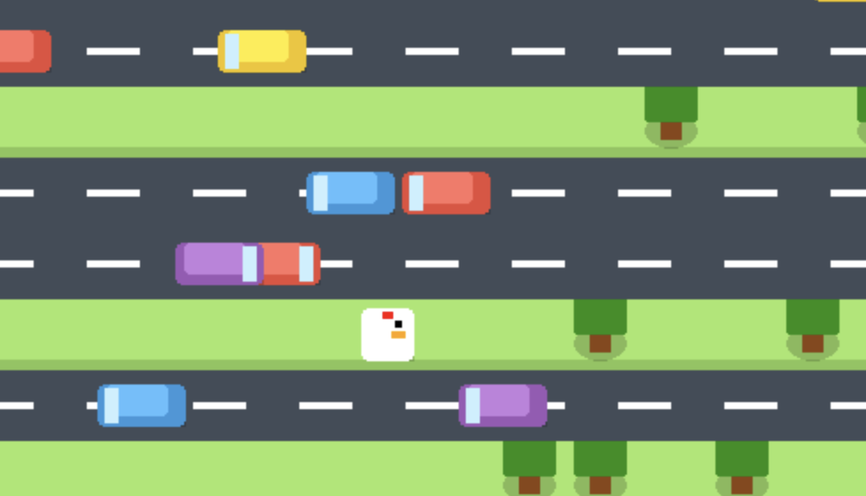

CS / ARTIFICIAL INTELLIGENCE
Crossy Road Challenge

An AI-driven exploration into pathfinding and collision logic, developed as part of a technical deep-dive into autonomous decision-making.
ARCHIVE / NETWORK ANALYSIS
Qiaopi: Distributed Financial Systems
Reinterpreting the Qiaopi remittance archives not just as letters, but as a historical analog to modern decentralized financial networks.
- Mapping: Visualized institutional routes to identify "emotional infrastructure" patterns in migration.
- Scale: Processed unstructured archival data into a public exhibition reaching 25,000+ visitors.
- Product: Engineered physical cultural products as tangible data-points for public education.
ENVIRONMENT / DATA VISUALIZATION
Wind of Ocean Hues
A data-physicalization project synthesizing offshore wind energy metrics into a coherent visual installation.
- Award: Bow Seat Ocean Awareness Bronze Medal.
- Method: Translated clean-energy capacity data into 3D modeled forms and translucent materials.
- Impact: Bridged the gap between technical energy specifications and public perception.